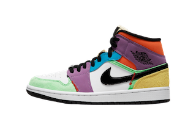
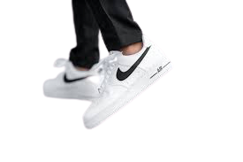
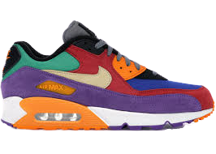

Air Jordan 1
Air Jordan is a brand of basketball shoes, athletic, casual, and style clothing produced by Nike. The original Air Jordan sneakers were produced exclusively for Michael Jordan in early 1984, and released to the public in late 1984.
Air Force 1
The Nike Air Force Ones, designed by Bruce Kilgore, debuted in 1982 and was the very first shoe that featured Nike's “Air” technology. Named after the presidential aircraft Air Force One, the AF1 shoe was made available in three different styles; a low, mid, and high cut shoe.
Air Max
Nike Air Max is a line of shoes produced by Nike, Inc., with the first model released in 1987. Air Max shoes are identified by their midsoles incorporating flexible urethane pouches filled with pressurized gel, visible from the exterior of the shoe and intended to provide cushioning underfoot.
| Sizes 4-6 | Sizes 7-9 | Sizes 10+ | |
|---|---|---|---|
| Air Jordan 1 | $450 | $550 | $900 |
| Air Force 1 | $65 | $90 | $120 |
| Air Max | $140 | $200 | $240 |
Disclaimer: This is not given by the professionals. It is an personal thoughts.
Proudly Build in Hartford
© 2023 ShoeStore@TP. All Rights Reserved.